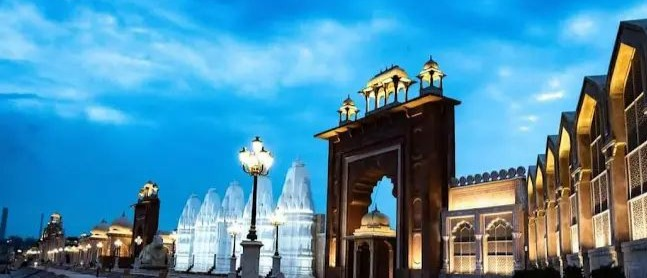

View on Maps
Seven Wonders Park
See mini replicas of the world’s seven wonders—Taj Mahal, Eiffel Tower, Great Pyramid and more—lined along the edge of Kishore Sagar. A popular sunset spot and great for photos.

Garh Palace (City Palace)
A sprawling palace complex on the Chambal with beautiful archways, fresco rooms, and the Maharao Madho Singh Museum. Offers a glimpse into Hadoti art and royal life.

Chambal Garden
Lush riverside park famous for calm walks and views of the Chambal River. Look out for boat rides and the nearby suspension bridge for panoramic shots.

Kishore Sagar Lake & Jagmandir
An iconic man-made lake with a picturesque palace pavilion (Jagmandir) at its center. Best experienced in the evening when the pavilion and lakeside glow with lights.